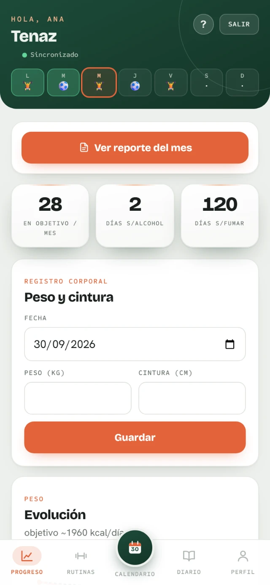
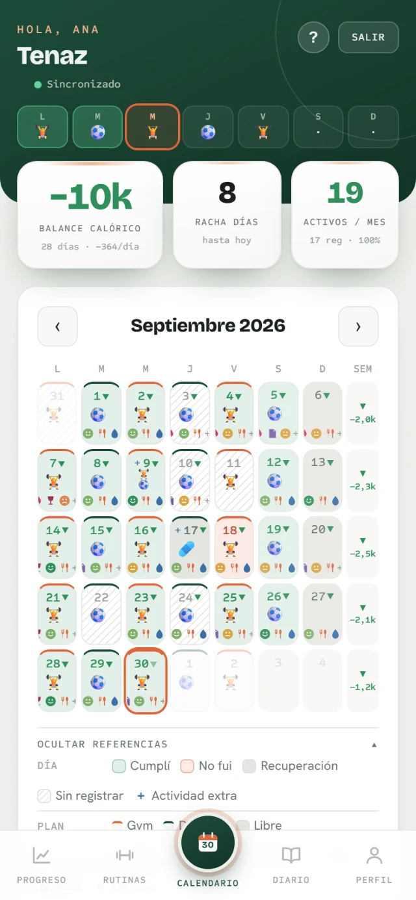
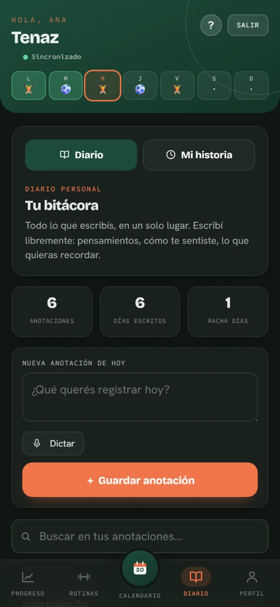
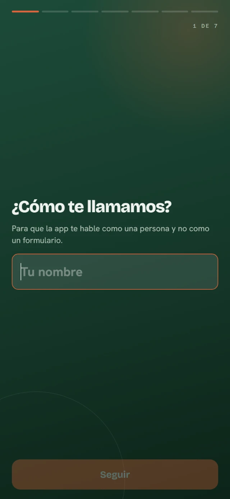

Entrenamiento
Gimnasio con rutinas y récords, 31 deportes, y sesiones de kinesiología o recuperación que no cuentan como falta.
Tenaz · entrenamiento, comida y bienestar
Entrenamiento, comida, ánimo y descanso. Anotás tu día en menos de un minuto — y al final del mes Tenaz te cuenta qué pasó.



Un solo lugar
La mayoría de las apps te miden una cosa. Un día real tiene muchas más, y todas se afectan entre sí: dormiste mal, comiste peor, no fuiste. Tenaz las anota juntas para que puedas verlo.
Gimnasio con rutinas y récords, 31 deportes, y sesiones de kinesiología o recuperación que no cuentan como falta.
Escribís lo que comiste, o le sacás una foto. Tenaz estima las calorías y vos ajustás la porción si la pifió.
Agua, alcohol y tabaco, con la racha de días a la vista. Lo que no querés registrar, lo apagás.
Cómo dormiste, cómo estás, y un diario para lo que no entra en un número. Con seguimiento de ciclo si te sirve.
Lo que nadie más hace
Un informe que lee todo lo que anotaste y te dice qué pasó de verdad: cuándo aflojaste, qué semana fue la mejor, cómo se movió tu peso contra lo que comiste. No son gráficos para que los interpretes vos.
Y tu diario puede volverse un relato — de un mes, de un año, o de toda tu vida registrada.
La diferencia
Registraste 3 días de 30.
Eso no es 10% de cumplimiento.
Eso es no saber.
Tenaz no cuenta los días que no cargaste. Si registraste pocos, te lo dice en vez de inventarte un número que te haga sentir mal. Es la única forma de que la cifra que ves signifique algo.

Empezar
Sin formularios de veinte campos. Te preguntamos lo justo para calcular tu objetivo calórico, te lo mostramos al toque, y después ajustás lo que quieras. Si no querés dar un dato, lo salteás.
Funciona en el navegador y se instala como app. Anda sin conexión: lo que cargues se sube solo cuando vuelva la señal.
Tus datos
Está todo escrito en la Política de Privacidad y en cómo eliminar tu cuenta.